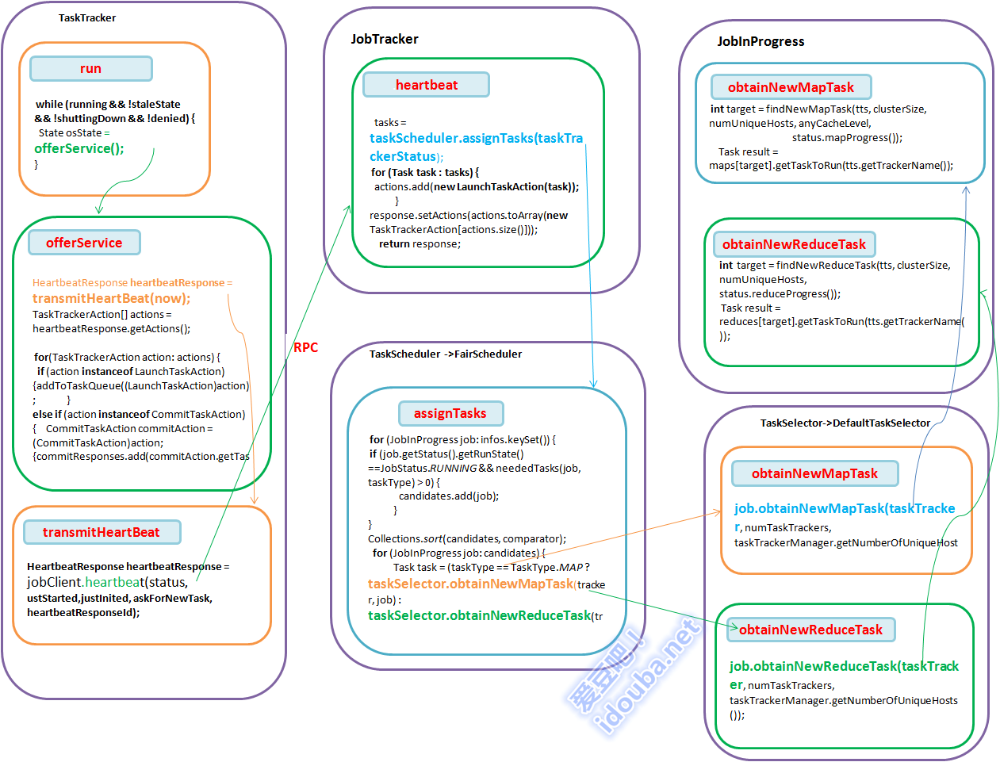

【hadoop代码笔记】hadoop作业提交之TaskTracker获取Task
一、概要描述
在上上一篇博文和上一篇博文中 分别描述了jobTracker和其服务（功能）模块初始化完成后，接收JobClient提交的作业，并进行初始化。本文着重描 述，JobTracker如何选择作业的Task分发到TaskTracker。本文只是描述一个TaskTracker如何从JobTracker获取 Task任务。Task任务在TaskTracker如何执行将在后面博文中描述。
二、 流程描述
- TaskTracker在run中调用offerService()方法一直死循环的去连接Jobtracker，先Jobtracker发送心跳，发送自身状态，并从Jobtracker获取任务指令来执行。
- 在JobTracker的heartbeat方法中，对于来自每一个TaskTracker的心跳请求，根据一定的作业调度策略调用assignTasks方法选择一定Task
- Scheduler调用对应的LoadManager的canAssignMap方法和canAssignReduce方法以决定是否可以给 tasktracker分配任务。默认的是CapBasedLoad，全局平均分配。即根据全局的任务槽数，全局的map任务数的比值得到一个load系 数，该系数乘以待分配任务的tasktracker的最大map任务数，即是该tasktracker能分配得到的任务数。如果太tracker当前运行 的任务数小于可运行的任务数，则任务可以分配新作业给他。（图中缺失了LoadManager的表达，也画不下了，就不加了。在代码详细分析中有）
- Scheduler的调用TaskSelector的obtainNewMapTask或者obtainNewReduceTask选择Task。
- 在DefaultTaskSelector中选择Task的方法其实只是封装了JobInProgress的对应方法。
- JobTracker根据得到的Task构造TaskTrackerAction设置到到HeartbeatResponse返回给TaskTracker。
- TaskTracker中将来自JobTracker的任务加入到TaskQueue中等待执行。

TaskTracker获取Task
三、代码详细
1. TaskTracker的入口函数main
1JobConf conf=new JobConf();
2 // enable the server to track time spent waiting on locks
3 ReflectionUtils.setContentionTracing
4 (conf.getBoolean("tasktracker.contention.tracking", false));
5 new TaskTracker(conf).run();
- TaskTracker的构造函数
1maxCurrentMapTasks = conf.getInt(
2 "mapred.tasktracker.map.tasks.maximum", 2);
3maxCurrentReduceTasks = conf.getInt(
4 "mapred.tasktracker.reduce.tasks.maximum", 2);
5this.jobTrackAddr = JobTracker.getAddress(conf);
6
7//启动httpserver 展示tasktracker状态。
8this.server = new HttpServer("task", httpBindAddress, httpPort,
9 httpPort == 0, conf);
10server.start();
11this.httpPort = server.getPort();
12//初始化方法
13initialize();
- TaskTracker的initialize方法，完成TaskTracker的初始化工作。
主要流程
1)检查可以创建本地文件夹
2)清理或者初始化需要用到的实例集合变量
3)初始化RPC服务器，接受task的请求。
4)清除临时文件
5)jobtracker的代理，负责处理和jobtracker的交互，通过RPC方式。
6)一个线程，获取map完成事件。
7)初始化内存管理
8)分别启动map和reduce的tasklauncher
1synchronized void initialize()
2 {
3 //检查可以创建本地文件夹
4 checkLocalDirs(this.fConf.getLocalDirs());
5 fConf.deleteLocalFiles(SUBDIR);
6 //清理或者初始化需要用到的实例集合变量
7 this.tasks.clear();
8 this.runningTasks = new LinkedHashMap<TaskAttemptID, TaskInProgress>();
9 this.runningJobs = new TreeMap<JobID, RunningJob>();
10 this.jvmManager = new JvmManager(this);
11 //初始化RPC服务器，接受task的请求。
12 this.taskReportServer =
13 RPC.getServer(this, bindAddress, tmpPort, 2 * max, false, this.fConf);
14 this.taskReportServer.start();
15 // 清除临时文件
16 DistributedCache.purgeCache(this.fConf);
17 cleanupStorage();
18
19 //jobtracker的代理，负责处理和jobtracker的交互，通过RPC方式。
20 this.jobClient = (InterTrackerProtocol)
21 RPC.waitForProxy(InterTrackerProtocol.class,
22 InterTrackerProtocol.versionID,
23 jobTrackAddr, this.fConf);
24
25 //一个线程，获取map完成事件。
26 this.mapEventsFetcher = new MapEventsFetcherThread();
27 mapEventsFetcher.setDaemon(true);
28 mapEventsFetcher.setName(
29 "Map-events fetcher for all reduce tasks " + "on " + taskTrackerName);
30 mapEventsFetcher.start();
31 //初始化内存管理
32 initializeMemoryManagement();
33 //分别启动map和reduce的tasklauncher
34 mapLauncher = new TaskLauncher(maxCurrentMapTasks);
35 reduceLauncher = new TaskLauncher(maxCurrentReduceTasks);
36 mapLauncher.start();
37 reduceLauncher.start();
38
39}
- TaskTracker 的run方法，在其中一直尝试执行offerService方法
1public void run()
2{
3 while (running && !staleState && !shuttingDown && !denied) {
4State osState = offerService();
5}
6}
5. TaskTracker 的offerService方法
-
通过RPC调用获得Jobtracker的系统目录。
-
发送心跳并且获取Jobtracker的应答
-
从JobTrackeer的应答中获取指令
-
不同的指令类型执行不同的动作
-
对于要launch的task加入到taskQueue中去
-
对于清理动作，加入待清理的task集合，会有线程自动清理
-
杀死那些过久未反馈进度的task
-
当磁盘空间不够时，杀死某些task以腾出空间
1State offerService()
2 {
3 //通过RPC调用获得Jobtracker的系统目录。
4 String dir = jobClient.getSystemDir();
5 if (dir == null) {
6 throw new IOException("Failed to get system directory");
7 }
8 systemDirectory = new Path(dir);
9 systemFS = systemDirectory.getFileSystem(fConf);
10 }
11 // 发送心跳并且获取Jobtracker的应答
12 HeartbeatResponse heartbeatResponse = transmitHeartBeat(now);
13 //从JobTrackeer的应答中获取指令
14 TaskTrackerAction[] actions = heartbeatResponse.getActions();
15 //不同的指令类型执行不同的动作
16 if (actions != null){
17 for(TaskTrackerAction action: actions) {
18 //对于要launch的task加入到taskQueue中去
19 if (action instanceof LaunchTaskAction) {addToTaskQueue((LaunchTaskAction)action); } else if (action instanceof CommitTaskAction) {
20 CommitTaskAction commitAction = (CommitTaskAction)action;
21 if (!commitResponses.contains(commitAction.getTaskID())) {commitResponses.add(commitAction.getTaskID());}
22 //加入待清理的task集合，会有线程自动清理
23 } else {tasksToCleanup.put(action);
24 }
25 }
26 }
27 //杀死那些过久未反馈进度的task
28 markUnresponsiveTasks();
29 //当磁盘空间不够时，杀死某些task以腾出空间
30 killOverflowingTasks();
31 }
6. TaskTracker的 transmitHeartBeat方法，定时向JobTracker发心跳。其实是通过RPC的方式向调用Jobtracker的heartbeat方法。
1private HeartbeatResponse transmitHeartBeat(long now)
2{
3boolean askForNewTask;
4long localMinSpaceStart;
5synchronized (this) {
6//判断该Tasktracker是否可以接受新的task，依赖于
7 askForNewTask = (status.countMapTasks() < maxCurrentMapTasks ||
8 status.countReduceTasks() < maxCurrentReduceTasks) &&
9 acceptNewTasks;
10 localMinSpaceStart = minSpaceStart;
11 }
12if (askForNewTask) {
13 checkLocalDirs(fConf.getLocalDirs());
14//判断本地空间是否足够，以决定是否接受新的task
15 askForNewTask = enoughFreeSpace(localMinSpaceStart);
16 long freeDiskSpace = getFreeSpace();
17 long totVmem = getTotalVirtualMemoryOnTT();
18 long totPmem = getTotalPhysicalMemoryOnTT();
19 status.getResourceStatus().setAvailableSpace(freeDiskSpace); status.getResourceStatus().setTotalVirtualMemory(totVmem); status.getResourceStatus().setTotalPhysicalMemory(totPmem); status.getResourceStatus().setMapSlotMemorySizeOnTT(mapSlotMemorySizeOnTT); status.getResourceStatus().setReduceSlotMemorySizeOnTT(reduceSlotSizeMemoryOnTT);
20}
21//通过jobclient通过RPC的方式向调用Jobtracker的heartbeat方法。
22HeartbeatResponse heartbeatResponse = jobClient.heartbeat(status, ustStarted,justInited, askForNewTask, heartbeatResponseId);
23}
6. JobTracker的 heartbeat方法。Jobtracker 接受并处理 tasktracker上报的状态，在返回的应答信息中指示tasktracker完成启停job或启动某个task的动作。
| 动作类型类 | 描述 |
|---|---|
| CommitTaskAction | 指示Task保存输出，即提交 |
| KillJobAction | 杀死属于这个Job的任何一个Task |
| KillTaskAction | 杀死指定的Task |
| LaunchTaskAction | 开启某个task |
| ReinitTrackerAction | 重新初始化taskTracker |
主要流程如下：
-
acceptTaskTracker(status)方法通过查询inHostsList(status) && !inExcludedHostsList确认Tasktracker是否在JobTracker的允许列表中。
-
当得知TaskTracker重启的标记，从jobtracker的潜在故障名单中移除该tasktracker
-
如果initialContact为否表示这次心跳请求不是该taskTracker第一次连接jobtracker，但是如果在jobtracker的 trackerToHeartbeatResponseMap记录中没有之前的响应记录，则说明发生了笔记严重的错误。发送指令给tasktracker 要求其重新初始化。
-
如果这是有问题的tasktracker重新接回来的第一个心跳，则通知recoveryManager recoveryManager从的recoveredTrackers列表中移除该tracker以表示该tracker又正常的接回来了。
-
如果initialContact != true 并且 revHeartbeatResponse != null表示上一个心跳应答存在，但是tasktracker表示第一次请求，则说上一个initialContact请求的应答丢失了，未传送到 tasktracker。则只是简单的把原来的应答重发一下即可。
-
构造应答的Id，是递加的。
-
处理心跳，其实就是在jobTracker端更新该tasktracker的状态
-
检查tasktracker可以运行新的task
-
调用JobTracker配置的taskSceduler来调度task给对应的TaskTracker。从submit到JobTracker的Job列表中选择每个job的每个Task，适合交给该TaskTracker调度的Task
-
把分配的Task加入到expireLaunchingTasks，监视并处理其是否超时。
-
根据调度器发获得要启动的task构造LaunchTaskAction，通知taskTracker启动这些task。
-
把属于该tasktracker的，job已经结束的task加入到killTasksList，发送到tasktracker杀死。即结束那些在tasktracker上已经结束了的作业的task，不管作业是完成还失败。
-
判定哪些作业需要清理的，构造Action加入到action列表中。trackerToJobsToCleanup是一个结合，当job gc的时候，调用 finalizeJob进而调用 addJobForCleanup 把作业加入到trackerToJobsToCleanup中
-
判定那些task可以提交输出，构造action加入到action列表。
-
计算下一次心跳的间隔，设置到应答消息中。
-
把上面这些Action设置到response中返回。
-
把本次应答保存到trackerToHeartbeatResponseMap中
1public synchronized HeartbeatResponse heartbeat(TaskTrackerStatus status,
2 2 boolean restarted,
3 3 boolean initialContact,
4 4 boolean acceptNewTasks,
5 5 short responseId)
6 6 throws IOException {
7 7
8 8 //1) acceptTaskTracker(status)方法通过查询inHostsList(status) && !inExcludedHostsList确认Tasktracker是否在JobTracker的允许列表中。
9 9 if (!acceptTaskTracker(status)) {
10 10 throw new DisallowedTaskTrackerException(status);
11 11 }
12 12 String trackerName = status.getTrackerName();
13 13 long now = System.currentTimeMillis();
14 14 boolean isBlacklisted = false;
15 15 if (restarted) {
16 16 //2)当得知TaskTracker重启的标记，从jobtracker的潜在故障名单中移除该tasktracker
17 17 faultyTrackers.markTrackerHealthy(status.getHost());
18 18 } else {
19 19 isBlacklisted =
20 20 faultyTrackers.shouldAssignTasksToTracker(status.getHost(), now);
21 21 }
22 22
23 23 HeartbeatResponse prevHeartbeatResponse =trackerToHeartbeatResponseMap.get(trackerName);
24 24 boolean addRestartInfo = false;
25 25
26 26 if (initialContact != true) {
27 27 //3)如果initialContact为否表示这次心跳请求不是该taskTracker第一次连接jobtracker，但是如果在jobtracker的trackerToHeartbeatResponseMap记录中没有之前的响应记录，则说明发生了笔记严重的错误。发送指令给tasktracker要求其重新初始化。
28 28 if (prevHeartbeatResponse == null) {
29 29 // This is the first heartbeat from the old tracker to the newly
30 30 // started JobTracker
31 31 //4)如果这是有问题的tasktracker重新接回来的第一个心跳，则通知recoveryManager
32 32 if (hasRestarted()) {
33 33 addRestartInfo = true;
34 34 // recoveryManager从的recoveredTrackers列表中移除该tracker以表示该tracker又正常的接回来了。
35 35 recoveryManager.unMarkTracker(trackerName);
36 36 } else {
37 37 //发送指令让tasktracker重新初始化。
38 38 return new HeartbeatResponse(responseId,
39 39 new TaskTrackerAction[] {new ReinitTrackerAction()});
40 40 }
41 41
42 42 } else {
43 43
44 44 //如果initialContact != true 并且 revHeartbeatResponse != null表示上一个心跳应答存在，但是tasktracker表示第一次请求，则说上一个initialContact请求的应答丢失了，未传送到tasktracker。则只是简单的把原来的应答重发一下即可。
45 45 if (prevHeartbeatResponse.getResponseId() != responseId) {
46 46 LOG.info("Ignoring 'duplicate' heartbeat from '" +
47 47 trackerName + "'; resending the previous 'lost' response");
48 48 return prevHeartbeatResponse;
49 49 }
50 50 }
51 51 }
52 52
53 53 // 应答的Id是递加的。
54 54 short newResponseId = (short)(responseId + 1);
55 55 status.setLastSeen(now);
56 56 //处理心跳，其实就是在jobTracker端更新该tasktracker的状态
57 57 if (!processHeartbeat(status, initialContact)) {
58 58 if (prevHeartbeatResponse != null) {
59 59 trackerToHeartbeatResponseMap.remove(trackerName);
60 60 }
61 61 return new HeartbeatResponse(newResponseId,
62 62 new TaskTrackerAction[] {new ReinitTrackerAction()});
63 63 }
64 64
65 65 // 检查tasktracker可以运行新的task
66 66 if (recoveryManager.shouldSchedule() && acceptNewTasks && !isBlacklisted) {
67 67 TaskTrackerStatus taskTrackerStatus = getTaskTracker(trackerName);
68 68 if (taskTrackerStatus == null) {
69 69 } else {
70 70 List<Task> tasks = getSetupAndCleanupTasks(taskTrackerStatus);
71 71 if (tasks == null ) {
72 72 //2调用JobTracker配置的taskSceduler来调度task给对应的TaskTracker。从submit到JobTracker的Job列表中选择每个job的每个Task，适合交给该TaskTracker调度的Task
73 73
74 74 tasks = taskScheduler.assignTasks(taskTrackerStatus);}
75 75 if (tasks != null) {
76 76 //把分配的Task加入到expireLaunchingTasks，监视并处理其是否超时。
77 77 for (Task task : tasks) {
78 78 Object expireLaunchingTasks;
79 79 expireLaunchingTasks.addNewTask(task.getTaskID());
80 80 actions.add(new LaunchTaskAction(task));
81 81 }
82 82 }
83 83 }
84 84 }
85 85
86 86 //把属于该tasktracker的，job已经结束的task加入到killTasksList，发送到tasktracker杀死。即结束那些在tasktracker上已经结束了的作业的task，不管作业是完成还失败。
87 87 List<TaskTrackerAction> killTasksList = getTasksToKill(trackerName);
88 88 if (killTasksList != null) {
89 89 actions.addAll(killTasksList);
90 90 }
91 91
92 92 //判定哪些作业需要清理。finalizeJob-> addJobForCleanup 当gc一个job的时候，会调用以上方法把其加入到trackerToJobsToCleanup中
93 93 List<TaskTrackerAction> killJobsList = getJobsForCleanup(trackerName);
94 94 if (killJobsList != null) {
95 95 actions.addAll(killJobsList);
96 96
97 97 //判定那些task可以提交输出。
98 98 List<TaskTrackerAction> commitTasksList = getTasksToSave(status);
99 99 if (commitTasksList != null) {
100100 actions.addAll(commitTasksList);
101101 }
102102
103103 //calculate next heartbeat interval and put in heartbeat response
104104 //计算下一次心跳的间隔，设置到应答消息中。
105105 int nextInterval = getNextHeartbeatInterval();
106106 response.setHeartbeatInterval(nextInterval);
107107
108108 //把上面这些Action设置到response中返回。
109109 response.setActions(actions.toArray(new TaskTrackerAction[actions.size()]));
110110 //把本次应答保存到trackerToHeartbeatResponseMap中
111111 trackerToHeartbeatResponseMap.put(trackerName, response);
112112 return response;
113113
114114 }
7.FairScheduler的assignTasks方法。JobTracker就是调用该方法来实现作业的分配的。
主要流程如下：
1)分别计算可运行的maptask和reducetask总数
2)ClusterStatus 维护了当前Map/Reduce作业框架的总体状况。根据ClusterStatus计算得到获得map task的槽数，reduce task的槽数。
3)调用LoadManager方法决定是否可以为该tasktracker分配任务(默认CapBasedLoadManager方法根据全局的任务槽数， 全局的map任务数的比值得到一个load系数，该系数乘以待分配任务的tasktracker的最大map任务数，即是该tasktracker能分配 得到的任务数。如果太tracker当前运行的任务数小于可运行的任务数，则任务可以分配新作业给他)
4)从job列表中找出那些job需要运行map或reduce任务，加到List
5)对candidates集合中的job排序，对每个job调用taskSelector的obtainNewMapTask或者 obtainNewReduceTask方法获取要执行的task。把所以的task放到task集合中返回。从而实现了作业Job的任务Task分配。
6)并对candidates集合中的每个job，更新Jobinfo信息，即其正在运行的task数，需要运行的task数，以便其后续调度用。
11 public synchronized List<Task> assignTasks(TaskTrackerStatus tracker)
2 2 throws IOException {
3 3 if (!initialized) // Don't try to assign tasks if we haven't yet started up
4 4 return null;
5 5
6 6 oolMgr.reloadAllocsIfNecessary();
7 7
8 8 // 分别计算可运行的maptask和reducetask总数
9 9 int runnableMaps = 0;
1010 int runnableReduces = 0;
1111 for (JobInProgress job: infos.keySet()) {
1212 runnableMaps += runnableTasks(job, TaskType.MAP);
1313 runnableReduces += runnableTasks(job, TaskType.REDUCE);
1414 }
1515
1616 // ClusterStatus 维护了当前Map/Reduce作业框架的总体状况。
1717 ClusterStatus clusterStatus = taskTrackerManager.getClusterStatus();
1818 //计算得到获得map task的槽数，reduce task的槽数。
1919 int totalMapSlots = getTotalSlots(TaskType.MAP, clusterStatus);
2020 int totalReduceSlots = getTotalSlots(TaskType.REDUCE, clusterStatus);
2121
2222 //从job列表中找出那些job需要运行map或reduce任务，加到List<JobInProgress> candidates集合中
2323 ArrayList<Task> tasks = new ArrayList<Task>();
2424 TaskType[] types = new TaskType[] {TaskType.MAP, TaskType.REDUCE};
2525 for (TaskType taskType: types) {
2626 boolean canAssign = (taskType == TaskType.MAP)
2727 //CapBasedLoadManager方法根据全局的任务槽数，全局的map任务数的比值得到一个load系数，该系数乘以待分配任务的tasktracker的最大map任务数，即是该tasktracker能分配得到的任务数。如果太tracker当前运行的任务数小于可运行的任务数，则任务可以分配新作业给他
2828 loadMgr.canAssignMap(tracker, runnableMaps, totalMapSlots) :
2929 loadMgr.canAssignReduce(tracker, runnableReduces, totalReduceSlots);
3030 if (canAssign) {
3131 List<JobInProgress> candidates = new ArrayList<JobInProgress>();
3232 for (JobInProgress job: infos.keySet()) {
3333 if (job.getStatus().getRunState() == JobStatus.RUNNING &&
3434 neededTasks(job, taskType) > 0) {
3535 candidates.add(job);
3636 }
3737 }
3838 //对candidates集合中的job排序，对每个job调用taskSelector的obtainNewMapTask或者obtainNewReduceTask方法获取要执行的task。把所以的task放到task集合中返回。
3939 // Sort jobs by deficit (for Fair Sharing) or submit time (for FIFO)
4040 Comparator<JobInProgress> comparator = useFifo
4141 new FifoJobComparator() : new DeficitComparator(taskType);
4242 Collections.sort(candidates, comparator);
4343 for (JobInProgress job: candidates) {
4444 Task task = (taskType == TaskType.MAP
4545 taskSelector.obtainNewMapTask(tracker, job) :
4646 taskSelector.obtainNewReduceTask(tracker, job));
4747 if (task != null) {
4848 //并对candidates集合中的每个job，更新Jobinfo信息，即其正在运行的task数，需要运行的task数。
4949 JobInfo info = infos.get(job);
5050 if (taskType == TaskType.MAP) {
5151 info.runningMaps++;
5252 info.neededMaps--;
5353 } else {
5454 info.runningReduces++;
5555 info.neededReduces--;
5656 }
5757 tasks.add(task);
5858 if (!assignMultiple)
5959 return tasks;
6060 break;
6161 }
6262 }
6363 }
6464 }
6565
6666 // If no tasks were found, return null
6767 return tasks.isEmpty() null : tasks;
6868 }
**8.CapBasedLoadManager的canAssignMap方法和canAssignReduce方法。**一 种简单的算法在FairScheduler中用来决定是否可以给某个tasktracker分配maptask或者reducetask。总体思路是对于 某种类型的task，map或者reduce，考虑jobtracker管理的mapreduce集群全部的任务数，和全部的任务槽数，和该 tasktracker上面当前的任务数，以决定是否给他分配任务。如对于maptask，根据全局的任务槽数，全局的map任务数的比值得到一个 load系数，该系数乘以待分配任务的tasktracker的最大map任务数，即是该tasktracker能分配得到的任务数。如果太 tracker当前运行的任务数小于可运行的任务数，则任务可以分配新作业给他。reducetask同理。即尽量做到全局平均。
1int getCap(int totalRunnableTasks, int localMaxTasks, int totalSlots) {
2 double load = ((double)totalRunnableTasks) / totalSlots;
3 return (int) Math.ceil(localMaxTasks * Math.min(1.0, load));
4 }
5
6 @Override
7 public boolean canAssignMap(TaskTrackerStatus tracker,
8 int totalRunnableMaps, int totalMapSlots) {
9 return tracker.countMapTasks() < getCap(totalRunnableMaps,
10 tracker.getMaxMapTasks(), totalMapSlots);
11 }
12
13 @Override
14 public boolean canAssignReduce(TaskTrackerStatus tracker,
15 int totalRunnableReduces, int totalReduceSlots) {
16 return tracker.countReduceTasks() < getCap(totalRunnableReduces,
17 tracker.getMaxReduceTasks(), totalReduceSlots);
18 }
9.DefaultTaskSelector继承自TaskSelector，其两个方法其实只是对jobInprogress得封装，没有做什么特别的事情。
1@Override
2 public Task obtainNewMapTask(TaskTrackerStatus taskTracker, JobInProgress job)
3 throws IOException {
4 ClusterStatus clusterStatus = taskTrackerManager.getClusterStatus();
5 int numTaskTrackers = clusterStatus.getTaskTrackers();
6 return job.obtainNewMapTask(taskTracker, numTaskTrackers,
7 taskTrackerManager.getNumberOfUniqueHosts());
8 }
9
10 @Override
11 public Task obtainNewReduceTask(TaskTrackerStatus taskTracker, JobInProgress job)
12 throws IOException {
13 ClusterStatus clusterStatus = taskTrackerManager.getClusterStatus();
14 int numTaskTrackers = clusterStatus.getTaskTrackers();
15 return job.obtainNewReduceTask(taskTracker, numTaskTrackers,
16 taskTrackerManager.getNumberOfUniqueHosts());
17 }
10. JobInProgress的obtainNewMapTask方法。其实主要逻辑是在findNewMapTask方法中实现。
1public synchronized Task obtainNewMapTask(TaskTrackerStatus tts,
2 int clusterSize,
3 int numUniqueHosts
4 ) throws IOException {
5
6 int target = findNewMapTask(tts, clusterSize, numUniqueHosts, anyCacheLevel,
7 status.mapProgress());
8
9 Task result = maps[target].getTaskToRun(tts.getTrackerName());
10 if (result != null) {
11 addRunningTaskToTIP(maps[target], result.getTaskID(), tts, true);
12 }
13
14 return result;
15 }
11 JobInProgress的findNewMapTask方法。
根据待派发Task的TaskTracker根据集群中的TaskTracker数量（clusterSize），运行TraskTracker的服务器数（numUniqueHosts），该Job中map task的平均进度（avgProgress），可以调度map的最大水平（距离其实），选择一个task执行。考虑到map的本地化。
1private synchronized int findNewMapTask(final TaskTrackerStatus tts,
2 final int clusterSize,
3 final int numUniqueHosts,
4 final int maxCacheLevel,
5 final double avgProgress) {
6 String taskTracker = tts.getTrackerName();
7 TaskInProgress tip = null;
8
9 //1）更新TaskTracker总数。
10 this.clusterSize = clusterSize;
11
12 //2）如果这个TraskTracker上面之前有很多map都会失败，则返回标记，不分配给他。
13 if (!shouldRunOnTaskTracker(taskTracker)) {
14 return -1;
15
16 //3） 检查该TaskTracker有足够的资源运行。估算output的方法有点意思，根据（job现有的map数+当前job的map数）*已完成map数*2*已完成的map的输出size/已经完成map的输入size，即根据完成估算总数。
17 long outSize = resourceEstimator.getEstimatedMapOutputSize();
18 long availSpace = tts.getResourceStatus().getAvailableSpace();
19 if(availSpace < outSize) {
20 LOG.warn("No room for map task. Node " + tts.getHost() +
21 " has " + availSpace +
22 " bytes free; but we expect map to take " + outSize);
23 return -1;
24 }
25
26 // For scheduling a map task, we have two caches and a list (optional)
27 // I) one for non-running task
28 // II) one for running task (this is for handling speculation)
29 // III) a list of TIPs that have empty locations (e.g., dummy splits),
30 // the list is empty if all TIPs have associated locations
31
32 // First a look up is done on the non-running cache and on a miss, a look
33 // up is done on the running cache. The order for lookup within the cache:
34 // 1. from local node to root [bottom up]
35 // 2. breadth wise for all the parent nodes at max level
36
37 // We fall to linear scan of the list (III above) if we have misses in the
38 // above caches
39
40 //4）获得jobTracker所在的Node
41 Node node = jobtracker.getNode(tts.getHost());
42
43 // I) Non-running TIP :
44 //5） 从未运行的作业集合中选择一个nonRunningMapCache 加入到运行集合runningMapCache中。加入时根据待添加的Task的split的位置信息，在runningMapCache中保存Node和Task集合的对应关系。
45
46 // 1. check from local node to the root [bottom up cache lookup]
47 // i.e if the cache is available and the host has been resolved
48 // (node!=null)
49 if (node != null) {
50 Node key = node;
51 int level = 0;
52 // maxCacheLevel might be greater than this.maxLevel if findNewMapTask is
53 // called to schedule any task (local, rack-local, off-switch or speculative)
54 // tasks or it might be NON_LOCAL_CACHE_LEVEL (i.e. -1) if findNewMapTask is
55 // (i.e. -1) if findNewMapTask is to only schedule off-switch/speculative
56 // tasks
57 //从taskTracker本地开始由近至远查找要加入的Task 到runningMapCache中。
58 int maxLevelToSchedule = Math.min(maxCacheLevel, maxLevel);
59 for (level = 0;level < maxLevelToSchedule; ++level) {
60 List <TaskInProgress> cacheForLevel = nonRunningMapCache.get(key);
61 if (cacheForLevel != null) {
62 tip = findTaskFromList(cacheForLevel, tts,
63 numUniqueHosts,level == 0);
64 if (tip != null) {
65 // 把该map任务加入到runningMapCache
66 scheduleMap(tip);
67 return tip.getIdWithinJob();
68 }
69 }
70 key = key.getParent();
71 }
72
73 // Check if we need to only schedule a local task (node-local/rack-local)
74 if (level == maxCacheLevel) {
75 return -1;
76 }
77 }
78
79 //2. Search breadth-wise across parents at max level for non-running
80 // TIP if
81 // - cache exists and there is a cache miss
82 // - node information for the tracker is missing (tracker's topology
83 // info not obtained yet)
84
85 // collection of node at max level in the cache structure
86 Collection<Node> nodesAtMaxLevel = jobtracker.getNodesAtMaxLevel();
87
88 // get the node parent at max level
89 Node nodeParentAtMaxLevel =
90 (node == null) null : JobTracker.getParentNode(node, maxLevel - 1);
91
92 for (Node parent : nodesAtMaxLevel) {
93
94 // skip the parent that has already been scanned
95 if (parent == nodeParentAtMaxLevel) {
96 continue;
97 }
98
99 List<TaskInProgress> cache = nonRunningMapCache.get(parent);
100 if (cache != null) {
101 tip = findTaskFromList(cache, tts, numUniqueHosts, false);
102 if (tip != null) {
103 // Add to the running cache
104 scheduleMap(tip);
105
106 // remove the cache if empty
107 if (cache.size() == 0) {
108 nonRunningMapCache.remove(parent);
109 }
110 LOG.info("Choosing a non-local task " + tip.getTIPId());
111 return tip.getIdWithinJob();
112 }
113 }
114 }
115
116 //搜索非本地Map
117 tip = findTaskFromList(nonLocalMaps, tts, numUniqueHosts, false);
118 if (tip != null) {
119 // Add to the running list
120 scheduleMap(tip);
121
122 LOG.info("Choosing a non-local task " + tip.getTIPId());
123 return tip.getIdWithinJob();
124 }
125
126 //
127 // II) Running TIP :
128 //
129
130 if (hasSpeculativeMaps) {
131 long currentTime = System.currentTimeMillis();
132
133 // 1. Check bottom up for speculative tasks from the running cache
134 if (node != null) {
135 Node key = node;
136 for (int level = 0; level < maxLevel; ++level) {
137 Set<TaskInProgress> cacheForLevel = runningMapCache.get(key);
138 if (cacheForLevel != null) {
139 tip = findSpeculativeTask(cacheForLevel, tts,
140 avgProgress, currentTime, level == 0);
141 if (tip != null) {
142 if (cacheForLevel.size() == 0) {
143 runningMapCache.remove(key);
144 }
145 return tip.getIdWithinJob();
146 }
147 }
148 key = key.getParent();
149 }
150 }
151
152 // 2. Check breadth-wise for speculative tasks
153
154 for (Node parent : nodesAtMaxLevel) {
155 // ignore the parent which is already scanned
156 if (parent == nodeParentAtMaxLevel) {
157 continue;
158 }
159
160 Set<TaskInProgress> cache = runningMapCache.get(parent);
161 if (cache != null) {
162 tip = findSpeculativeTask(cache, tts, avgProgress,
163 currentTime, false);
164 if (tip != null) {
165 // remove empty cache entries
166 if (cache.size() == 0) {
167 runningMapCache.remove(parent);
168 }
169 LOG.info("Choosing a non-local task " + tip.getTIPId()
170 + " for speculation");
171 return tip.getIdWithinJob();
172 }
173 }
174 }
175
176 // 3. Check non-local tips for speculation
177 tip = findSpeculativeTask(nonLocalRunningMaps, tts, avgProgress,
178 currentTime, false);
179 if (tip != null) {
180 LOG.info("Choosing a non-local task " + tip.getTIPId()
181 + " for speculation");
182 return tip.getIdWithinJob();
183 }
184 }
185
186 return -1;
187
188 }
12 JobInProgress的obtainNewReduceTask方法返回一个ReduceTask，实际调用的是findNewReduceTask方法。
1public synchronized Task obtainNewReduceTask(TaskTrackerStatus tts,
2 int clusterSize,
3 int numUniqueHosts
4 ) throws IOException {
5 //判定有足够的map已经完成。，
6 if (!scheduleReduces()) {
7 return null;
8 }
9
10 int target = findNewReduceTask(tts, clusterSize, numUniqueHosts,
11 status.reduceProgress());
12 Task result = reduces[target].getTaskToRun(tts.getTrackerName());
13 if (result != null) {
14 addRunningTaskToTIP(reduces[target], result.getTaskID(), tts, true);
15 }
16
17 return result;
18 }
13 JobInProgress的findNewReduceTask方法，为指定的TaskTracker选择Reduce task。不用考虑本地化。
1private synchronized int findNewReduceTask(TaskTrackerStatus tts,
2 int clusterSize,
3 int numUniqueHosts,
4 double avgProgress) {
5 String taskTracker = tts.getTrackerName();
6 TaskInProgress tip = null;
7
8 // Update the last-known clusterSize
9 this.clusterSize = clusterSize;
10 // 该taskTracker可用性符合要求
11 if (!shouldRunOnTaskTracker(taskTracker)) {
12 return -1;
13 }
14
15//估算Reduce的输入，根据map的总输出来和reduce的个数来计算。
16 long outSize = resourceEstimator.getEstimatedReduceInputSize();
17 long availSpace = tts.getResourceStatus().getAvailableSpace();
18 if(availSpace < outSize) {
19 LOG.warn("No room for reduce task. Node " + taskTracker + " has " +
20 availSpace +
21 " bytes free; but we expect reduce input to take " + outSize);
22
23 return -1; //see if a different TIP might work better.
24 }
25
26 // 1. check for a never-executed reduce tip
27 // reducers don't have a cache and so pass -1 to explicitly call that out
28 tip = findTaskFromList(nonRunningReduces, tts, numUniqueHosts, false);
29 if (tip != null) {
30 scheduleReduce(tip);
31 return tip.getIdWithinJob();
32 }
33
34 // 2. check for a reduce tip to be speculated
35 if (hasSpeculativeReduces) {
36 tip = findSpeculativeTask(runningReduces, tts, avgProgress,
37 System.currentTimeMillis(), false);
38 if (tip != null) {
39 scheduleReduce(tip);
40 return tip.getIdWithinJob();
41 }
42 }
43
44 return -1;
45 }
14 TaskTracker 的addToTaskQueue方法。对于要launch的task加入到taskQueue中去，不同类型的Task有不同类型额launcher。
1private void addToTaskQueue(LaunchTaskAction action) {
2 if (action.getTask().isMapTask()) {
3 mapLauncher.addToTaskQueue(action);
4 } else {
5 reduceLauncher.addToTaskQueue(action);
6 }
7}
完。